Artist · Architect · Spatial Designer / Kyoto, Japan
選ばれた
実績。
横田満康の歩みを、作品の来歴として。和硝子の誕生、京都駅での展示、国内の文化施設、そしてニューヨークから台湾へ——誰が、どこで、どのように評価してきたかを、ここに記します。

横田満康の歩みを、作品の来歴として。和硝子の誕生、京都駅での展示、国内の文化施設、そしてニューヨークから台湾へ——誰が、どこで、どのように評価してきたかを、ここに記します。
横田満康は建築家として空間づくりに携わり、着物デザインの経験を背景に、京友禅や西陣織の帯そのものをガラスに封じ込める「和硝子」を展開してきました。2013年、和硝子の制作を本格的に開始。その歩みはMBS『京都知新』でも特集されました。
本ページに掲載する実績は、公式発表・後援許可・賞状・展示ポスターなど、確認できる記録に基づいています。
平成26年9月19日付の後援名義使用許可書により、『着物ガラスアート 和硝子の世界』への後援が許可された。
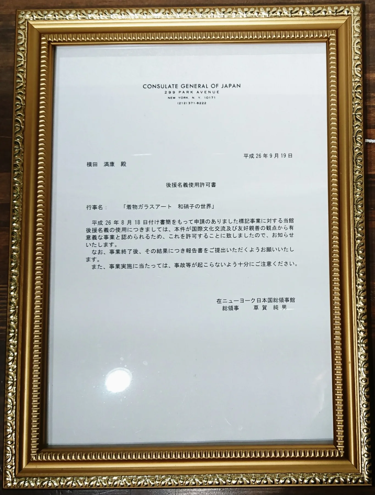
The Nippon Gallery at The Nippon Club（145 West 57th Street, New York）にて、『和硝子の世界』個展を開催（2014年10月23日–31日）。在ニューヨーク日本国総領事館後援。
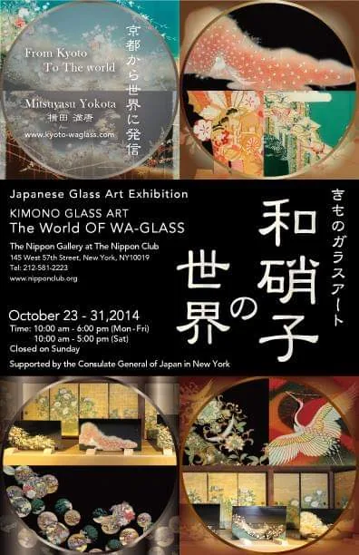
第30回 Chelsea International Fine Art Competition（Agora Gallery, Chelsea, New York）にて Honorable Mention。
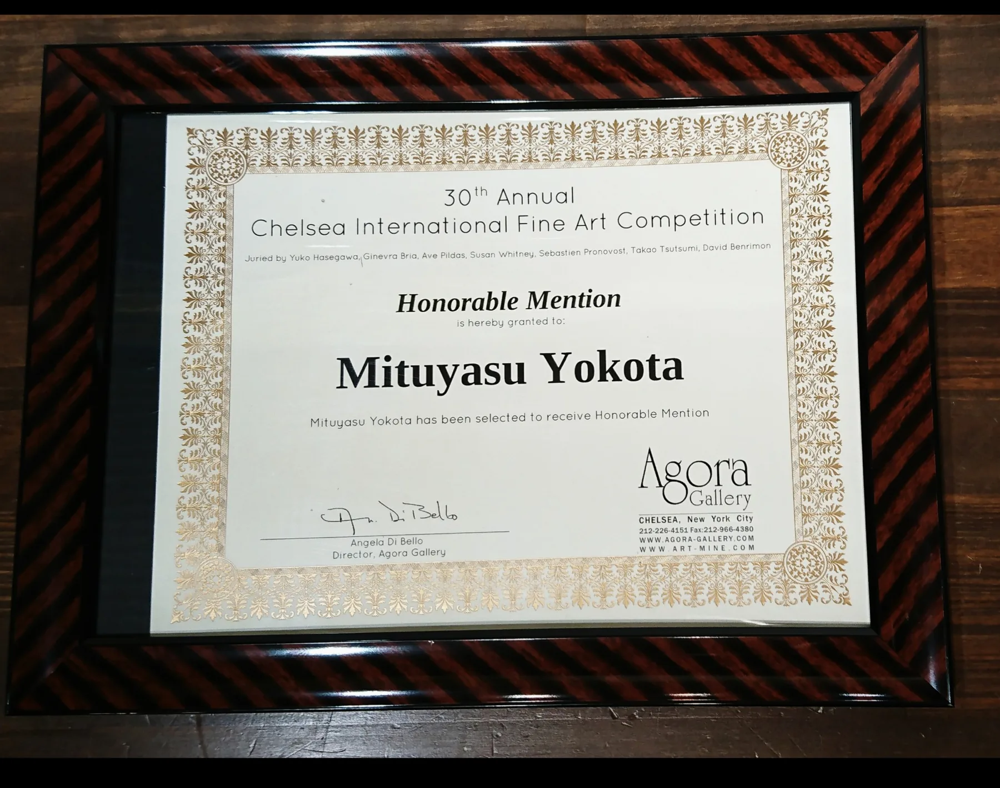
テキサス州オースティンの東京エレクトロン・アメリカ本社にて、Kimono Glass Art『World of Wa-Glass』関連の公開イベントを開催（Public opening: 2015年11月16日）。
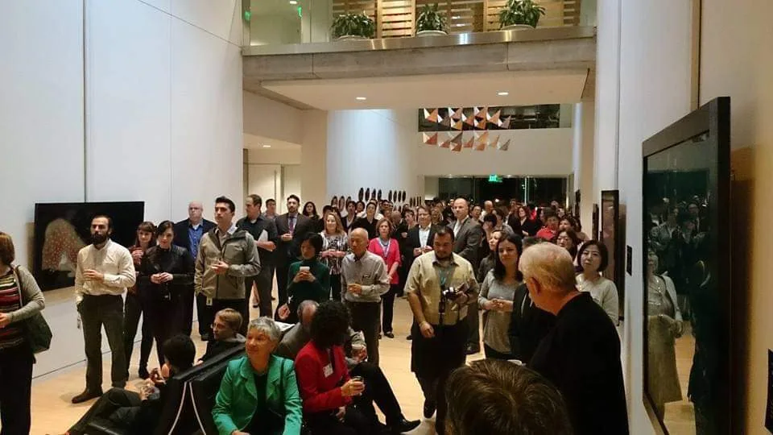
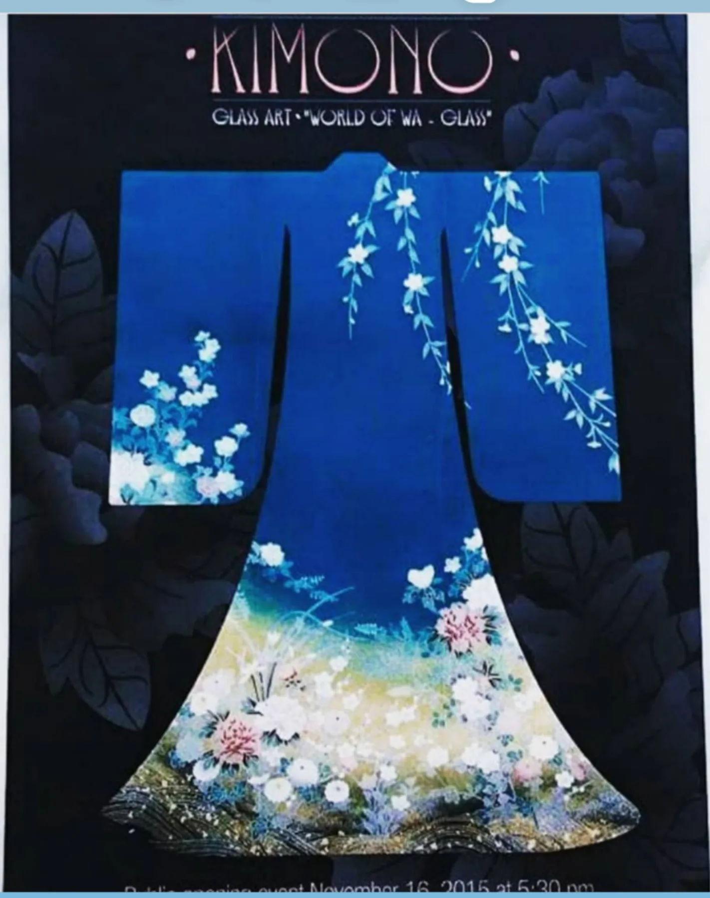
2018年5月、サウジアラビア殿下へ作品を寄贈。
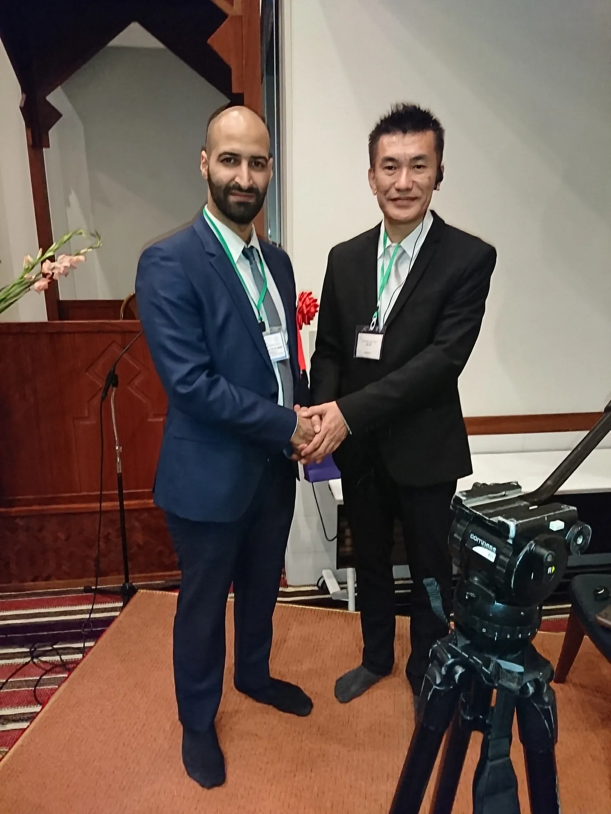
2018年7月、六本木ヒルズにて横田満康の個展を開催。ブライダルデザイナー桂由美氏がゲスト出演し、会場でトークを行った。
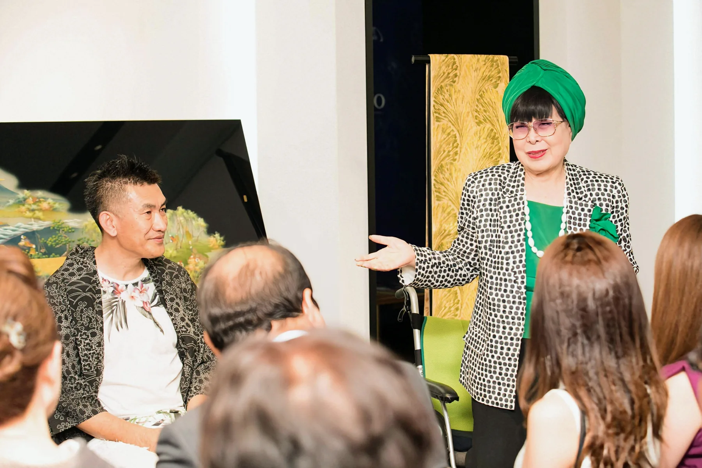
一般社団法人ハートアートコミュニケーション主催『Heart Art in KOBE 2019 第二十二回エイズチャリティー美術展』にて優秀、持田総章芸術賞（令和元年7月13日）。
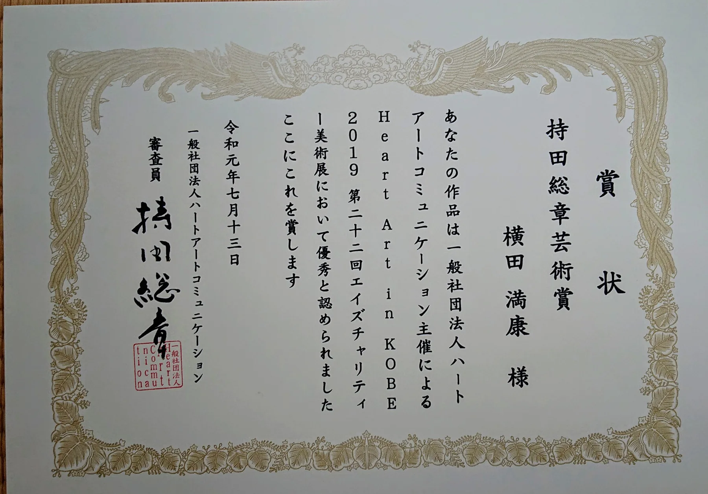
2024年5月8日–7月5日、台北市大安区・WUZ屋子台北未來店にて『和硝子の世界』個展を開催（首次台灣展覽）。工商時報でも紹介された。
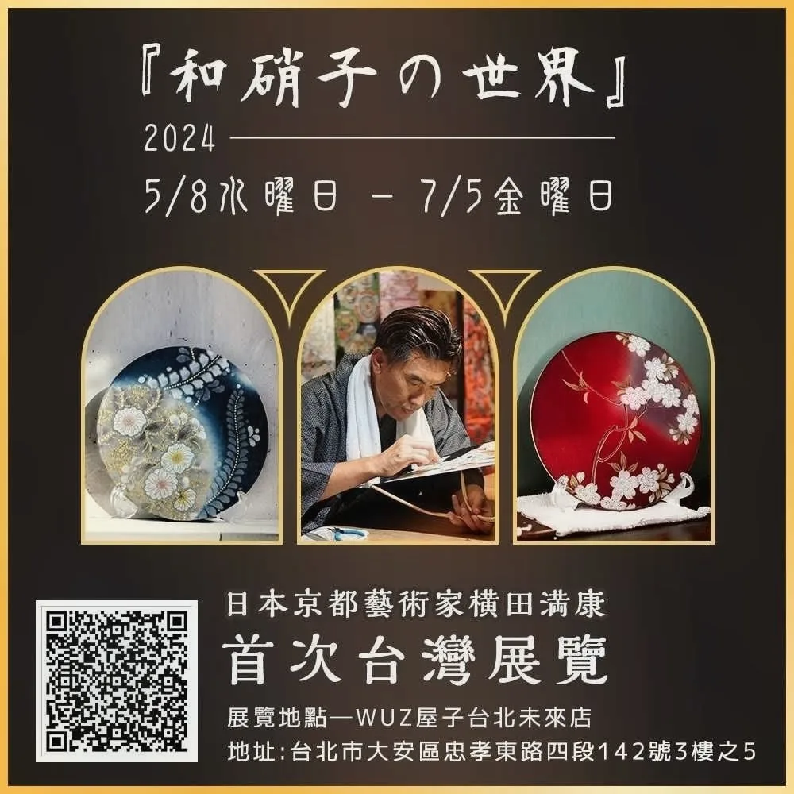
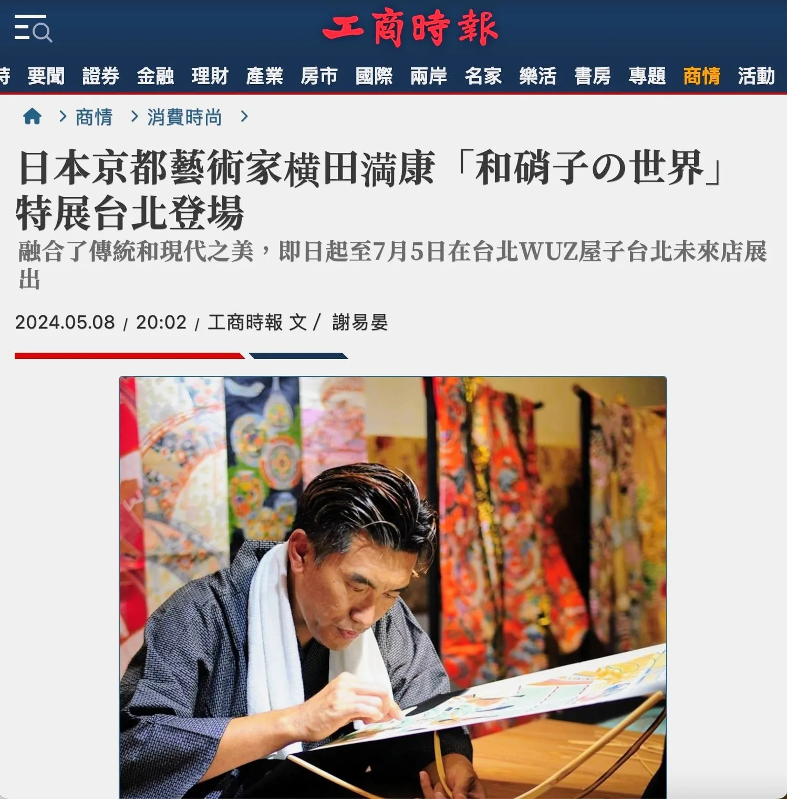
写真家レスリー・キー氏とのコラボレーション展示。会場にレスリー・キーの写真作品とともに、和硝子作品を出展した。
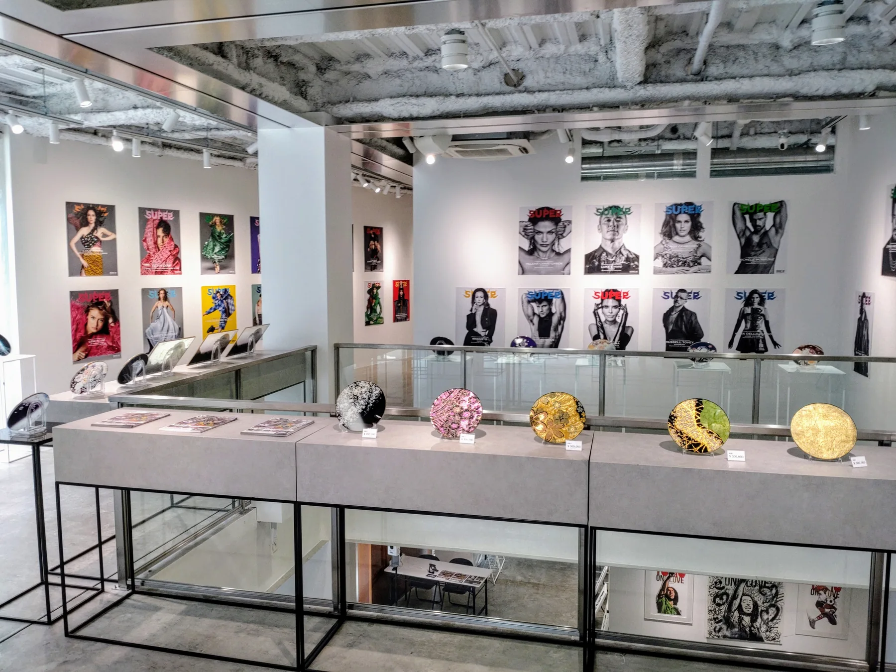
新海誠監督作品『雲のむこう、約束の場所』20周年記念 ART EXHIBITION（2024年11月1日–24日）に、和硝子として作品を出展。
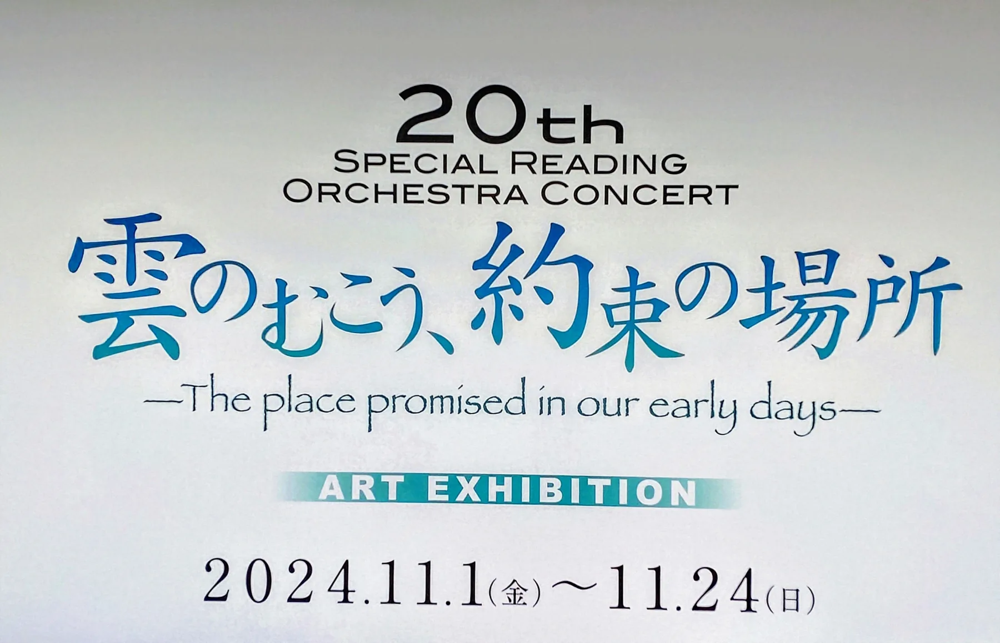
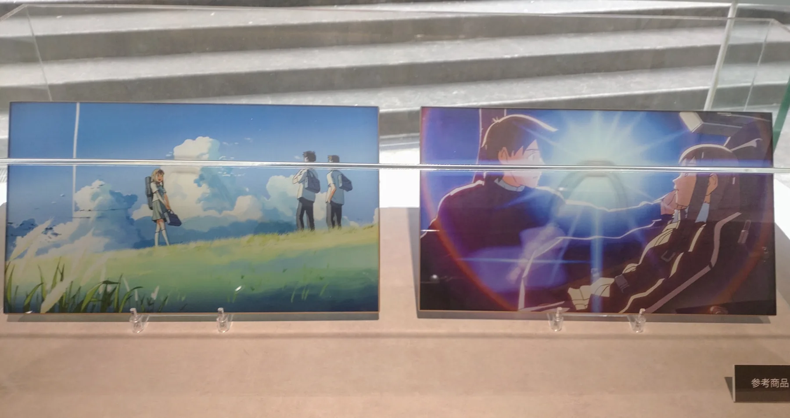

2017年、JR東海・東海キヨスクの公式発表により、京都駅新幹線八条口「ギフトキヨスク京都」の柱内ディスプレイで横田の和硝子の展示・販売が始まりました。現在も八条口には8点の和硝子が展示されています。
VIEW SOURCE2014年、『和硝子の世界』への後援名義使用許可書。
日本クラブ The Nippon Gallery、2014年10月23–31日。
第30回 Chelsea International Fine Art Competition、Honorable Mention。
東京エレクトロン・アメリカ本社での公開イベント会場の様子。
東京エレクトロン・アメリカ本社、公開イベント 2015年11月16日。
Heart Art in KOBE 2019（エイズチャリティー美術展）優秀。

2014年2月、寝殿造り重要文化財「宸殿」牡丹の間での個展。
2018年3月、『空間の伝承』特別出展ブース。
2018年7月個展に桂由美氏がゲスト出演。
2018年5月、殿下へ作品を寄贈。
2024年9月、写真家レスリー・キーとのコラボ展示。
2024年5月8日–7月5日、『和硝子の世界』／WUZ屋子台北未來店。
工商時報（2024.05.08）による台北特展の紹介。
『雲のむこう、約束の場所』ART EXHIBITION、2024年11月1–24日。
20周年展会場の参考作品（『雲のむこう、約束の場所』関連）。

名古屋城「孔雀の間」での展示とも響き合う、和硝子の代表的な視覚世界。